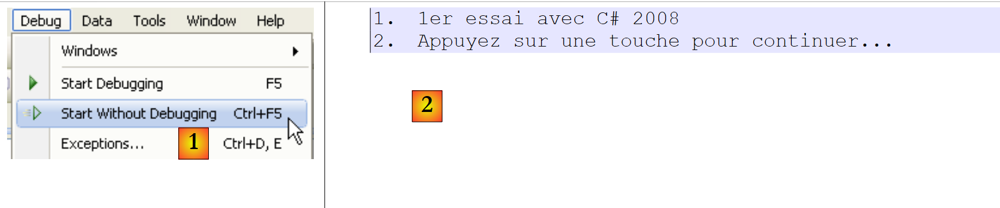
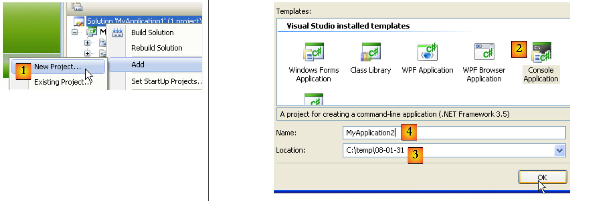

2. 安装 Visual C# 2008
2008年1月底，Visual Studio 2008的Express版本已可在以下地址[1]下载[2]：[http://msdn2.microsoft.com/en-fr/express/future/default(en-us).aspx]：
 |
- [1]: 下载地址
- [2]: “下载”选项卡
- [3]: 下载 C# 2008
安装 C# 2008 时，您还将同时安装：
- .NET 3.5 框架
- SQL Server Compact 3.5 数据库管理系统
- MSDN 文档
要使用 C# 2008 创建您的第一个程序，请在启动 C# 后按照以下步骤操作：
 |
- [1]：选择“文件”/“新建项目”
- [2]：选择“控制台应用程序”
- [3]：为项目命名——此名称将在下方进行修改
- [4]：确认
- [4b]: 项目已创建
- [4c]：Program.cs 是项目中默认生成的 C# 程序文件。
 |
- 步骤 1 并未询问项目保存位置。若不进行任何操作，项目将保存在默认位置，该位置可能不符合我们的需求。选项 [5] 用于将项目保存到特定文件夹中。
- 您可以在 [6] 中为项目命名，并在 [7] 中指定其文件夹。要执行此操作，请使用 [8]。若选择此处，项目将被保存至文件夹 [C:\temp\08-01-31MyApplication1]。
- 勾选 [9] 后，可为解决方案创建一个名称如 [10] 所示的文件夹。若解决方案名为 Solution1：
- 系统将为解决方案 Solution1 创建文件夹 [C:\temp\08-01-31\Solution1]
- 将为项目 MyApplication1 创建文件夹 [C:\temp\08-01-31\Solution1]。此方案非常适合由多个项目组成的解决方案。每个项目将在解决方案文件夹中拥有一个子文件夹。
 |
- 在 [1] 中：项目 MyApplication1 的窗口
- 在 [2] 中：其内容
- [3]：Visual Studio 项目资源管理器中的该项目
让我们将文件 [Program.cs] [3] 的代码修改如下：
using System;
namespace ConsoleApplication1 {
class Program {
static void Main(string[] args) {
Console.WriteLine("1er essai avec C# 2008");
}
}
}
- 第 3 行：第 4 行定义的类的命名空间。第 4 行定义的类的全名是 ici ConsoleApplication1.Program。
- 第 5-7 行：静态方法 Main，当程序执行时
- 第 6 行：屏幕显示
该程序的运行方式如下：
 |
- 按 [Ctrl-F5] 运行项目，在 [1]
- 在 [2] 中，可查看控制台输出。
执行过程已向以下位置添加了文件：
 |
- 在 [1] 中，显示所有项目文件
- 在 [2] 中：[Release] 文件夹包含项目可执行文件 [MyApplication1.exe]。
- 在 [3] 中：[Debug] 文件夹，如果项目是在 [Debug] 模式下运行的（使用 F5 键而非 Ctrl-F5），该文件夹也会包含该项目的可执行文件 [MyApplication1.exe]。这与 [Release] 模式下生成的可执行文件不同。它包含额外的信息，以支持调试过程的进行。
可以将新项目添加到当前解决方案中：
 |
- [1]：右键单击解决方案（而非项目） / 添加 / 新建项目
- [2]：选择应用程序类型
- [3]：默认文件夹为包含现有项目文件夹 [MyApplication1] 的文件夹
- [4]：为新项目命名
此时该解决方案包含两个项目：
 |
- [1]：新项目
- [2]：当使用 (F5 或 Ctrl-F5) 执行解决方案时，其中一个项目会被执行。这被称为 [2]。
一个项目可以包含多个可执行类（包含 Main 方法）。在这种情况下，必须指定项目运行时要执行的类：
 |
- [1, 2]: 复制/粘贴文件 [Program.cs]
- [3]: 复制/粘贴结果
- [4,5]: 重命名这两个文件
 |
类 P1（第 4 行）：
using System;
namespace MyApplication2 {
class P1 {
static void Main(string[] args) {
}
}
}
P2 类（第 4 行）：
using System;
namespace MyApplication2 {
class P2 {
static void Main(string[] args) {
}
}
}
[MyApplication2] 项目现在有两个类，它们都包含一个静态方法 Main。必须指定该方法属于哪个类：
 |
- 在 [1] 中：项目属性 [MyApplication2]
- 在 [2] 中：选择项目运行时（F5 或 Ctrl-F5）要执行的类
- 在 [3] 中：生成的可执行文件类型——此处选择“控制台应用程序”将生成一个 .exe 文件。
- 在 [4] 中：生成的可执行文件名称（不带 .exe 后缀）
- 在 [5] 中：默认命名空间。这是添加到项目中的每个新类代码中将生成的命名空间。如有需要，可直接在代码中进行修改。